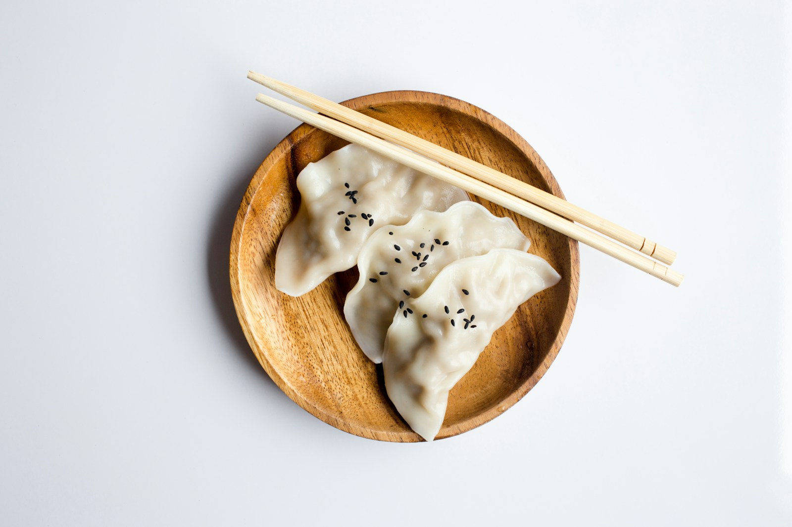

01
蓮香樓
給想把早晨過得熱鬧一點的水水：茶香、蒸氣、推車和一整個舊香港的節奏。
先點：蝦餃、燒賣、叉燒包，再慢慢加一壺普洱。
星期日
2026.07.26

一套留給老香港的茶樓聲，一套留給漂亮又輕鬆的慢早餐。水水可以臨出門才選，反正兩個答案都很你。
先到中環：一盅普洱，一籠蝦餃，讓點心車替你選第一口。
每一間都配了一個心情。選好後，直接用地圖確認明早的即日營業資訊。
水水加了一條很好的規則：只要有燒乳鴿，行程就可以再延長。這些是港島和九龍的晚餐備選，出發前先用地圖看今日供應。